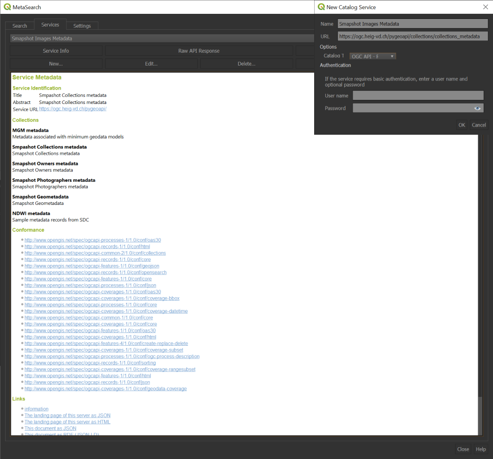
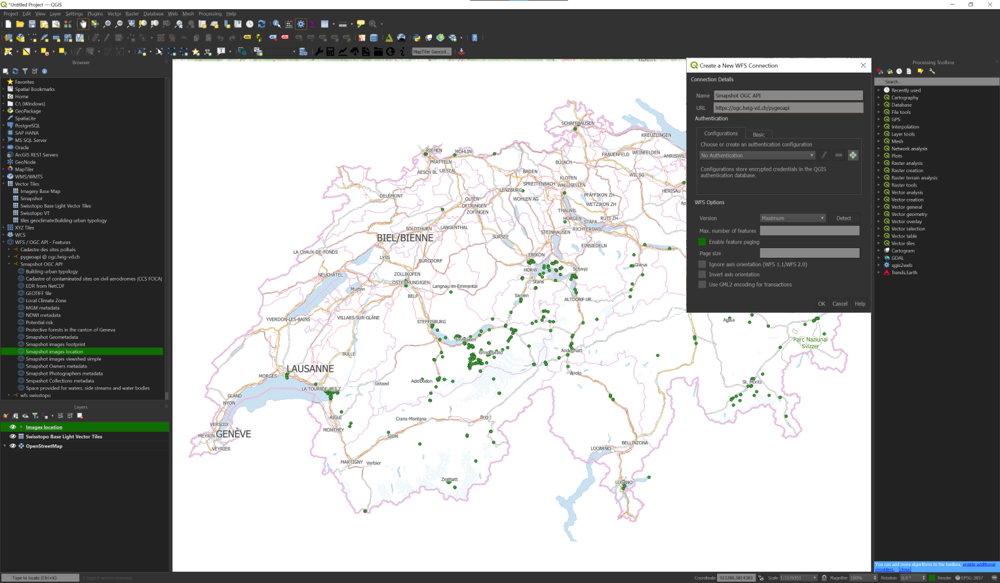

name: title layout: true class: center, middle, inverse --- #Smapshot API ## OGC API implementation POC Stat of work<br>31-10-2022 --- layout:false class: left, top ## Content 0. Motivations 0. Targeted standards and associated collections 0. pygeoapi 0. Data Access 0. Swagger UI 0. Open Layers 0. QGIS 0. Lessons learned 0. Future work --- class: left, top ## 1. Motivations - Compliance with OGC API - Interoperability - Easier development/integration.red[*] .footnote[.red[*]<sub><sup>Advanced Tools/Import of [https://map.geo.admin.ch](https://map.geo.admin.ch)?</sup></sub>] --- class: left, top ## 2. Targeted standards and associated collections <style type="text/css"> .tg {border-collapse:collapse;border-color:#ccc;border-spacing:0;} .tg td{background-color:#fff;border-color:#ccc;border-style:solid;border-width:1px;color:#333; font-family:'Droid Serif';font-size:14px;overflow:hidden;padding:10px 5px;word-break:normal;} .tg th{background-color:#f0f0f0;border-color:#ccc;border-style:solid;border-width:1px;color:#333; font-family:'Droid Serif';font-size:14px;font-weight:normal;overflow:hidden;padding:10px 5px;word-break:normal;} .tg .tg-ao2g{border-color:#333333;text-align:center;vertical-align:top} .tg .tg-de2y{border-color:#333333;text-align:left;vertical-align:top} @media screen and (max-width: 767px) {.tg {width: auto !important;}.tg col {width: auto !important;}.tg-wrap {overflow-x: auto;-webkit-overflow-scrolling: touch;}}</style> <div class="tg-wrap" align="center"><table class="tg"> <thead> <tr> <th class="tg-ao2g">Collection</th> <th class="tg-ao2g">Type</th> </tr> </thead> <tbody> <tr> <td class="tg-ao2g"><a href="https://ogc.heig-vd.ch/pygeoapi/collections/images_location" target="_blank" rel="noopener noreferrer">Images location</a></td> <td class="tg-ao2g"><a href="" target="_blank" rel="noopener noreferrer">OGC API Features</a></td> </tr> <tr> <td class="tg-ao2g"><a href="https://ogc.heig-vd.ch/pygeoapi/collections/images_viewshed_simple" target="_blank" rel="noopener noreferrer">Images viewshed</a></td> <td class="tg-ao2g"><a href="" target="_blank" rel="noopener noreferrer">OGC API Features</a></td> </tr> <tr> <td class="tg-ao2g"><a href="Images footprint" target="_blank" rel="noopener noreferrer">Images footprint</a></td> <td class="tg-ao2g"><a href="" target="_blank" rel="noopener noreferrer">OGC API Features</a></td> </tr> <tr> <td class="tg-ao2g"><a href="https://ogc.heig-vd.ch/pygeoapi/collections/collections_metadata" target="_blank" rel="noopener noreferrer">Collection metadata</a></td> <td class="tg-ao2g"><a href="" target="_blank" rel="noopener noreferrer">OGC API Features</a></td> </tr> <tr> <td class="tg-ao2g"><a href="https://ogc.heig-vd.ch/pygeoapi/collections/owners_metadata" target="_blank" rel="noopener noreferrer">Owners metadata</a></td> <td class="tg-ao2g"><a href="" target="_blank" rel="noopener noreferrer">OGC API Records</a></td> </tr> <tr> <td class="tg-ao2g"><a href="https://ogc.heig-vd.ch/pygeoapi/collections/photographers_metadata" target="_blank" rel="noopener noreferrer">Photographers metadata</a></td> <td class="tg-ao2g"><a href="" target="_blank" rel="noopener noreferrer">OGC API Records</a></td> </tr> <tr> <td class="tg-ao2g"><a href="https://ogc.heig-vd.ch/pygeoapi/collections/company_metadata" target="_blank" rel="noopener noreferrer">Company metadata</a></td> <td class="tg-ao2g"><a href="" target="_blank" rel="noopener noreferrer">OGC API Records</a></td> </tr> <tr> <td class="tg-ao2g"><a href="https://ogc.heig-vd.ch/pygeoapi/collections/geometadata" target="_blank" rel="noopener noreferrer">Geometadata</a></td> <td class="tg-ao2g"><a href="" target="_blank" rel="noopener noreferrer">OGC API Records</a></td> </tr> </tbody> </table></div> ### 2.1 To be potentially implemented: - OGC API Tiles (images location vectortiles) - OGC API 3D Tiles (quantized mesh, swissbuildings3d) --- class: left, top ## 3. pygeoapi - Python server implementation of the OGC APIs<br> - Initiated by Tom Kralidis in 2018 - RESTful OGC API endpoint using OpenAPI, GeoJSON, and HTML<br> - Open source and released under an MIT license <p style="text-align:center;"><iframe src="https://demo.pygeoapi.io/" width="100%" height="400" style="border:1px solid black;"><a href="https://demo.pygeoapi.io/"></a></iframe></p> ??? pygeoapi is a Python server implementation of the OGC API suite of standards. The project emerged as part of the next generation OGC API efforts in 2018 and provides the capability for organizations to deploy a RESTful OGC API endpoint using OpenAPI, GeoJSON, and HTML. pygeoapi is open source and released under an MIT license. --- class: left, top ## 4. Data Access ### 4.1 Swagger UI - https://ogc.heig-vd.ch/pygeoapi/openapi?f=html - Some differences with the current API ### 4.2 Open Layers <iframe height="350" style="width: 100%;" scrolling="yes" title="OGC API Features Open Layers integration" src="https://codepen.io/MediaComem/embed/OJEydMM?default-tab=result" frameborder="no" loading="lazy" allowtransparency="true" allowfullscreen="true"> See the Pen <a href="https://codepen.io/MediaComem/pen/OJEydMM"> OGC API Features Open Layers integration</a> by Ingénierie des médias (<a href="https://codepen.io/MediaComem">@MediaComem</a>) on <a href="https://codepen.io">CodePen</a>. </iframe> --- class: left, top ## 4. Data Access ### 4.2 QGIS #### 4.2.1 OGC API Records 0. Browse: `Web`>`Metasearch`>`Metasearch` in the toolbar 0. Create a new connection 0. Specify the following url: `https://ogc.heig-vd.ch/pygeoapi/collections/collections_metadata`.red[*] <p style="text-align:center;"></p> <br>.footnote[.red[*]<sub><sup>Depending your QGIS version, you may encounter some problems.</sup></sub>] --- class: left, top ## 4. Data Access ### 4.2 QGIS #### 4.2.1 OGC API Features 0. Browse: `Layer`>`Add Layer`>`Add WFS Layer` in the toolbar 0. Create a new server connection 0. Specify the following url: `https://ogc.heig-vd.ch/pygeoapi` <p style="text-align:center;"></p> --- class: left, top ## 4. Data Access ### 4.3 CQL Filtering <p style="text-align:center;"><iframe src="https://clydedacruz.github.io/openstreetmap-wkt-playground/" width="100%" height="300" style="border:1px solid black;"><a href="https://clydedacruz.github.io/openstreetmap-wkt-playground/"></a></iframe></p> <sup><sub>https://ogc.heig-vd.ch/pygeoapi/collections/images_footprint/items?bbox=7.454385291345676,46.677581212968136,7.867799257607846,46.83661250958942&filter=CROSSES(footprint,LINESTRING(7.63763%2046.755226,7.636992%2046.756444))&f=json</sub></sup> --- class: left, top ## 5. Lessons learned - Relatively easy to deploy<br><br> - Easier integration into common clients (QGIS, OpenLayers)<br><br> - 3D datas<br><br> - [OGC API - Features - Part 3: Filtering and the Common Query Language (CQL)](https://portal.ogc.org/files/96288#cql-core) - PostgreSQL `JSON` datatype not supported by pygeoapi --- class: left, top ## 6. Future work - Building an interactive popup in the [Open Layers Client](https://codepen.io/MediaComem/pen/OJEydMM)<br><br> - [OGC API - Features - Part 3: Filtering and the Common Query Language (CQL)](https://portal.ogc.org/files/96288#cql-core)<br><br> - Use case: Geolocated images in the vicinity of a route✅<br><br> - Implementing the API with Node Express & [Sequelize](https://sequelize.org/) .pull-left[ <p style="text-align:center;"><img src="https://nodejs.org/static/images/logo.svg" alt="Sequelize logo" width="90%"></p> ] .pull-right[ <p style="text-align:center;"><img src="https://sequelize.org/img/logo.svg" alt="Sequelize logo" width="50%"></p> ] --- name: last-page template: inverse class: center, middle, inverse ## That's all for now folks!